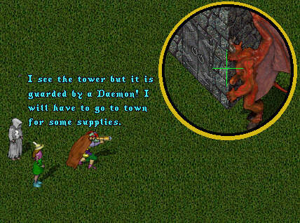
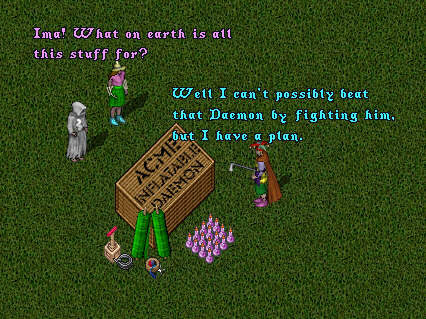
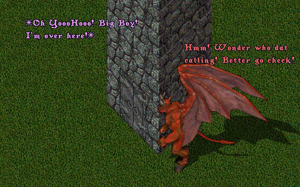
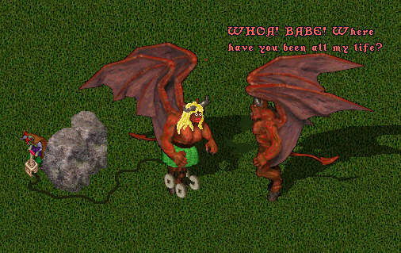
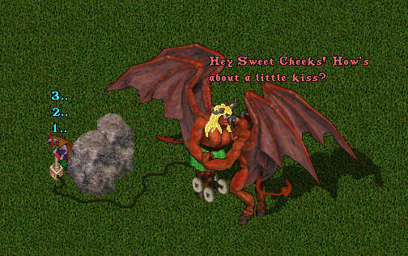
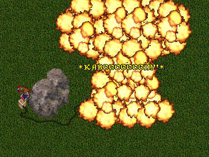
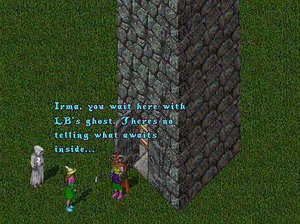

Episode 70: The Conspiracy (Part 3) - Unable to find anyone who will res Lord British, ImaNewbie, Irma and LB's ghost head off to find the secret tower, rumored to contain the mysterious crystals that have enslaved the GM's and Counsellors. Soon they find themselves in an immense grassy plain. As our episode opens ImaNewbie is scouring the landscape with his spyglass. Warning! This is a big one so let it load all the way before viewing.

ImaNewbie, knowing that he cannot defeat a Daemon,
comes up with a clever plan to thwart the Beast.

Working feverishly with the supplies he has collected,
ImaNewbie puts his plan into effect. The trap is set,
but will it work?

Hearing the seductive voice beckoning him,
the Daemon goes to investigate.



Having successfully disposed of the Daemon, ImaNewbie prepares to enter the tower.
